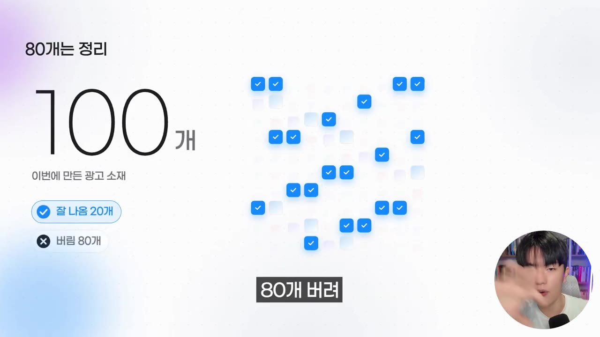
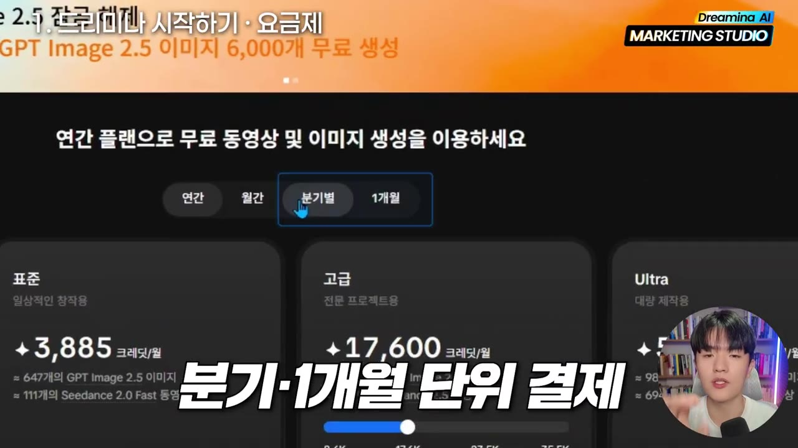
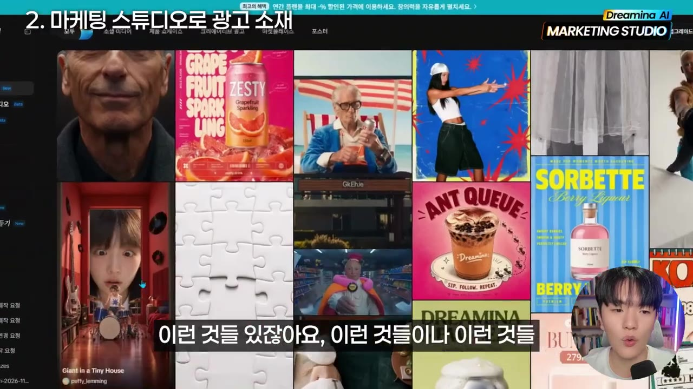
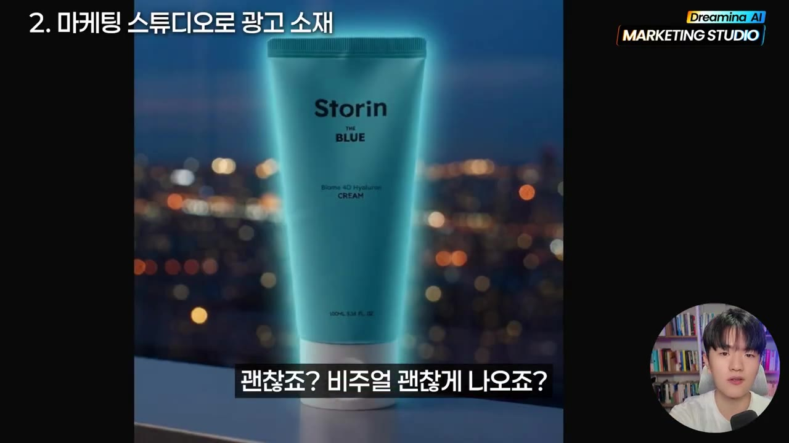
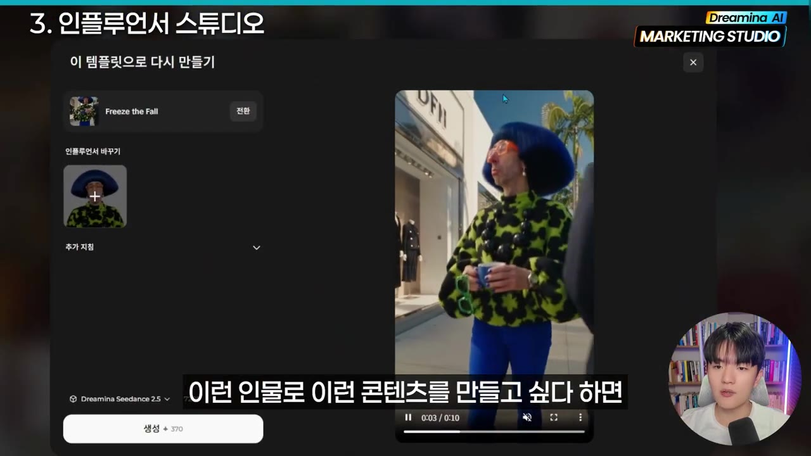
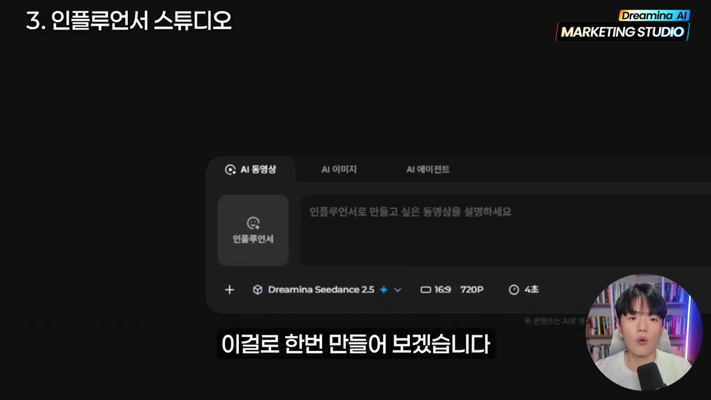
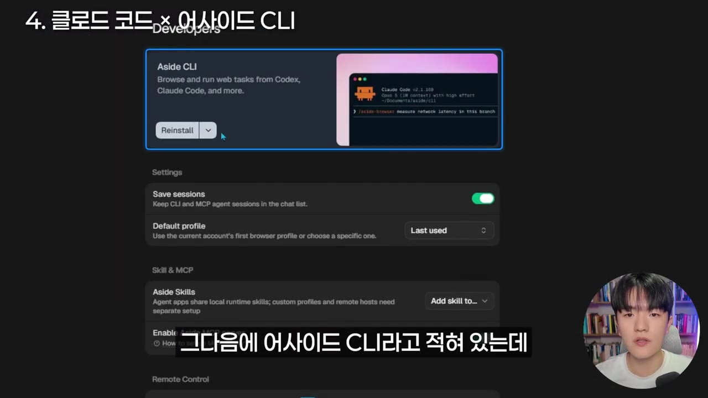
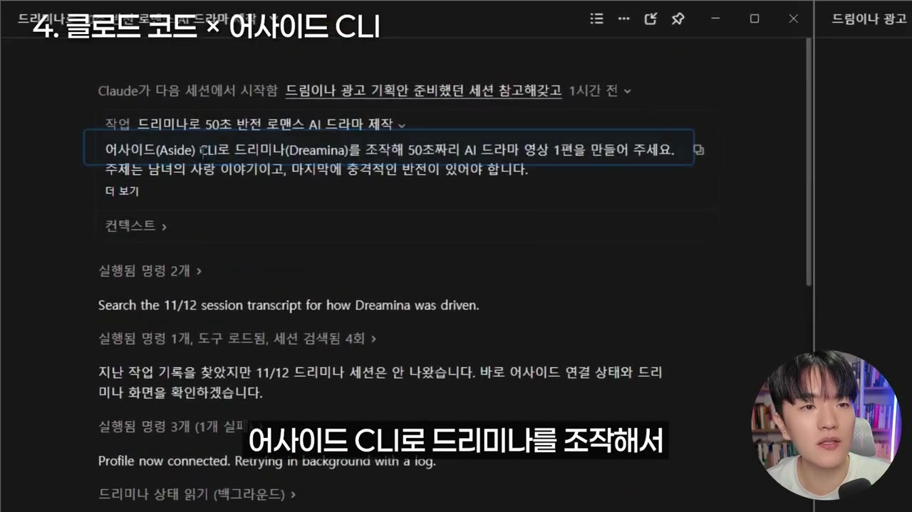

"대부분 몰라요" 어사이드와 드리미나로 광고 소재 자동화 하는 방법
▶ 원본 영상 보기한눈에 보기
- 메타 퍼포먼스 마케팅은 AI로 광고 소재를 대량 생성→성과 좋은 것만 남기고 유사 소재를 늘리는 "양과 돈" 방식이 요즘 추세라고 영상은 주장한다.
- 드리미나(Dreamina)의 마케팅 스튜디오는 제품 사진과 템플릿만 고르면 광고 영상·포스터를 만들어 준다. 핵심은 제품과 템플릿의 결(얼라인)을 맞추는 것이다.
- 인플루언서 스튜디오로 AI 인플루언서 캐릭터를 만들고, 그 캐릭터로 영상까지 생성할 수 있다.
- 어사이드(Aside) CLI를 클로드 코드에 연결하면, 말 한마디로 클로드→어사이드→드리미나를 자동 제어해 영상을 만들 수 있다.
- 드리미나는 연간·월간·분기·1개월 요금제가 있고, 영상 시점에는 블랙프라이데이 할인 중이었다.
이런 분께 도움이 됩니다
- 메타(페이스북·인스타) 유료 광고 소재를 빠르게 많이 만들어야 하는 마케터·커머스 운영자.
- AI 인플루언서 캐릭터나 AI 영상 콘텐츠 제작 자동화에 관심 있는 분.
핵심 내용
메타 퍼포먼스 마케팅의 소재 트렌드
- 메타 퍼포먼스 마케팅은 광고 소재를 만들어 노출시키고, 홈페이지·스토어로 유입시켜 구매하게 하는 방식이다. 영상 속 화자는 연매출 수백억~900억 규모 회사들이 이 영역에 가장 관심이 많다고 말한다. (0:31)
- 예전에는 제작 리소스가 한계라 효율 좋은 소재를 고르는 것이 중요했지만, 지금은 AI로 무한 복제·확장이 가능하다.
- 요즘의 운영 방식(화자가 든 예시):
- AI로 50개 제작 → 광고 집행 → 성과 좋은 10개만 남기고 40개 버림
- 그 10개와 비슷한 소재 100개 제작 → 집행 → 20개 남김
- 그 20개와 비슷한 소재 200개 제작
- 화자는 이것이 "지금이니까 먹히는" 방식이며, 시간이 지나 사람들이 AI 소재에 익숙해지면 효율이 떨어질 것이라고 전망한다. (2:10)
💡 지금은 AI 소재를 "많이 만들어 거르는" 속도 싸움이지만, 영원하진 않다는 게 화자의 전망.

드리미나 요금제
- 오른쪽 위 업그레이드에서 요금제를 결제한다. 연간·월간뿐 아니라 분기, 1개월 단위가 있어 써 보고 판단하기 좋다. (2:47)
- 영상 시점에는 얼리 블랙프라이데이 할인 중이며, 대부분은 표준 모델이면 충분하다고 한다. 일부 모델(시댄스 2.5, 시댄스 2.5 플래시, 재미나 2.5, 시댄스 2.0 패스트 등)은 무제한 생성이 가능하다고 언급한다(자막상 모델명 표기 불분명).
- 구체적 가격은 영상에 나오지 않는다.

마케팅 스튜디오로 광고 소재 만들기
- 템플릿이 매우 많고, 요즘은 설득 구조가 있는 스토리텔링 영상보다 비주얼 감도로 후킹해 도달·인지를 노리는 소재도 많이 쓴다고 한다. (3:59)
- 템플릿 선택 기준 두 가지(화자 개인 의견):
- 제품과 템플릿의 결이 맞아야 한다. 음료 캔 템플릿에 화장품을 넣으면 어색하게 나온다.
- 영상 초반에 제품이 나오는 템플릿이 좋다.
- 상단 탭(소셜 미디어·제품 쇼케이스·크리에이티브 광고·마켓플레이스 포스터)으로 목적별 필터링이 가능하다.
- 시연: 크림·앰플 제품으로 템플릿 여러 개를 동시에 생성. 모델은 씨드림 5.0(자막상 "C드림 5.0K"로 불분명). 라벨 비침, 기포 같은 디테일이 좋다고 평가한다. (5:56)
- 결과 이미지에 폰트를 얹어 포스터 광고로 써도 되겠다고 한다. (7:15)


인플루언서 스튜디오
- 해외에서는 독특한 AI 캐릭터로 인스타·유튜브 채널을 운영해 광고를 받거나 제품을 직접 판매하는 비즈니스가 늘고 있다고 한다. (7:42)
- 캐릭터를 직접 만들기 어려우면 참고 이미지를 붙여 넣고 말로 요청하면 된다.
🔁 AI 인플루언서 영상 제작 순서
- 참고 이미지 캡처
- 캐릭터 생성
- 캐릭터 저장
- 스튜디오에 업로드
- 영상 생성


클로드 코드 × 어사이드 CLI
- 화자는 드리미나를 웹에서만 쓰지 않고 어사이드를 통해 쓴다. 클로드에게 만들고 싶은 것만 말하면, 클로드가 어사이드를 제어하고 어사이드가 프롬프트를 다듬어 드리미나에서 작업을 수행한다. (11:11)
- 직접 드리미나를 쓰면 이미지·프롬프트·상황·카메라 앵글 등 기획이 미리 있어야 퀄리티가 나오는데, 이 방식은 자연어 채팅만으로 가능해 편하다고 한다.
- 화자의 데모 요청: "어사이드 CLI로 드리미나를 조작해 50초짜리 AI 드라마 영상 한 편, 주제는 남녀의 사랑 이야기, 마지막에 충격적 반전". 영상 촬영 시점에도 작업이 끝나지 않았고 토큰도 꽤 소모됐다고 한다. (12:16)
- 응용: 병렬 에이전트·세션으로 시나리오·대본 에이전트를 나누거나, 루틴으로 걸어 레퍼런스만 주면 자동 생성하는 워크플로우도 가능하다고 제안한다. (12:44)
🔁 어사이드 CLI 설치 순서
- 설정 열기
- 개발자 메뉴
- 클로드 코드에 붙여넣기
- 모델 선택
- 1설정 열기
어사이드 왼쪽 아래 프로필 → 세팅
- 2개발자 메뉴
Developers 메뉴에서 "어사이드 CLI" 명령 복사
- 3클로드 코드에 붙여넣기
클로드 코드 화면에 복사한 명령을 붙이고 "설치해 줘" 입력
- 4모델 선택
화자는 Sonnet으로 설정


화자의 운영 사례
- 화자 팀은 AI 영상 유튜브 채널 6개를 운영 중이고 이번 달 10개까지 늘릴 목표이며, 도구 비용보다 수익이 더 컸다고 주장한다(수치 미공개). (13:51)
따라 해보기
준비물
- 드리미나 계정과 유료 요금제(요금 영상에 미공개), 어사이드 계정, 클로드 코드(CLI 설치 필요). 소요 시간은 영상 기준 15분 안팎 시연.
단계별 방법
🔁 마케팅 스튜디오 광고 소재 만들기
- 스튜디오 접속
- 요금제 결제
- 템플릿 고르기
- 제품 사진 넣기
- 결과 활용
따라 할 수 있는지 점검
- ✅ 바로 따라 할 수 있음: 템플릿 선택 기준, 인플루언서 캐릭터 생성 순서(프롬프트 문장 포함).
- ⚠️ 2단계 「요금제 결제」: 실제 가격·크레딧 소모량이 영상에 안 나옴 → 드리미나 요금제 페이지에서 확인.
- ⚠️ 4단계 「제품 사진 넣기」: 업로드 화면의 세부 조작(비율·옵션)이 빠르게 지나감 → 영상 5:23~5:56 화면 확인.
- ⚠️ 어사이드 CLI 설치: 복사하는 명령의 실제 내용, 어사이드 가입·요금 여부 불분명 → 어사이드 설정의 Developers 메뉴 확인. 화자가 "앞서 올린 어사이드 영상을 먼저 보라"고 안내함.
- ⚠️ 드리미나 연결: 클로드 코드가 드리미나에 로그인·권한을 얻는 과정이 영상에 없음 → 설치 후 안내 확인.
- ❓ 인플루언서 캐릭터 생성에 쓴 "GPT 선버스트 모델"은 자막상 불분명하여 정확한 모델명 확인 필요.
확인 방법
- 템플릿 결과물에서 제품 라벨·형태가 원본과 일치하는지, 영상 초반에 제품이 보이는지 확인.
막히면
- 템플릿과 제품 종류가 안 맞으면 결과가 어색하다 → 제품과 비슷한 카테고리 템플릿으로 교체.
기억할 숫자·인용
- 소재 확장 예시: 50개 → 10개 선별 → 100개 → 20개 선별 → 200개.
- 요금제 단위: 연간·월간·분기·1개월.
- 데모 요청: 50초 AI 드라마, 반전 결말.
생각해볼 점
- 영상은 드리미나 제휴 링크(UTM 포함)가 설명란에 있는 홍보 성격이다. 가격·성과 주장은 독립적으로 검증이 필요하다.
- "도구 비용보다 수익이 컸다"는 주장은 수치가 없어 확인할 수 없다.
- 화자가 직접 언급했듯 AI 소재가 늘면 효율이 떨어질 수 있고, 메타의 AI 생성 콘텐츠 표기·광고 정책도 확인해야 한다(보충).
- 클로드 코드 자동화는 토큰 소모가 크다고 화자도 밝혔다.
바로 해볼 일
- 드리미나 요금제 페이지에서 1개월 요금과 현재 할인 여부 확인하기
- 우리 제품과 결이 맞는 템플릿 2~3개로 소재 시안 만들어 보기
- 어사이드 설정 → Developers에서 CLI 명령 확인하기